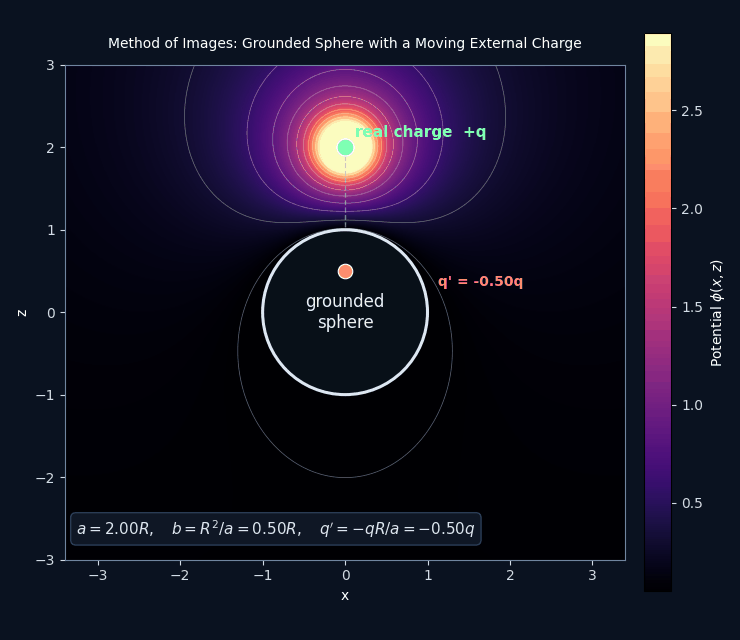
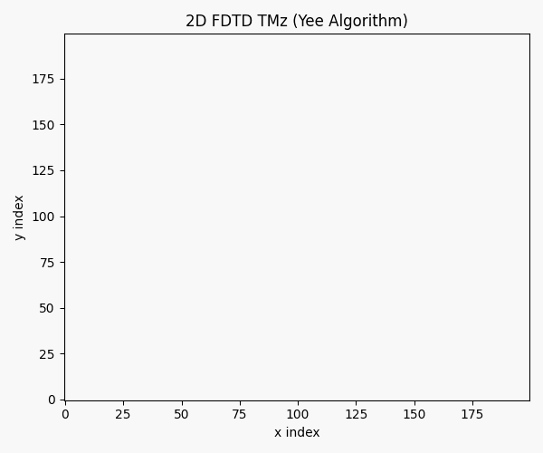

Study by topic
Use the topic pages if you want the material arranged like a course with notebooks, problem sets, and references grouped together.
Graduate Electrodynamics Project
This site organizes the repository into a small number of useful entry points so you can study a topic, review notes, or open an interactive tool without digging through the full file tree.
Start Here
Use the topic pages if you want the material arranged like a course with notebooks, problem sets, and references grouped together.
Use the notes page when you want chapter notes, compact references, and faster revision without opening every notebook.
Use the visuals and interactive pages when you want to see fields, geometry, or numerical output rather than read derivations first.
Featured Visuals

A moving source and its image charge keep the grounded sphere at zero potential throughout the motion.
Open visuals
Charges, field arrows, a potential heatmap, and particle motion in one compact interactive page.
Open lab
A time-domain field animation that shows how the computational side of the repo connects to the theory.
Open visualsRecommended Entry Points
This is the best first stop for structured study. It gives the clearest overview of what has been built for each subject.
This is the fastest review path. Use it when you want PDFs, chapter notes, and references without the full notebook workflow.